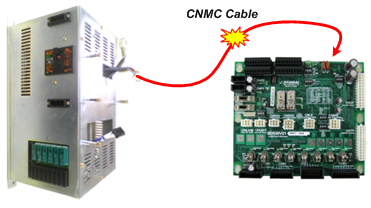

Previous error code: E0127 MSHP operation error
1.1.34.1. Outline
Magnetic contactor MC1 not operating while trying servo ON
1.1.34.2. Causes and examine methods
|
(1) Check the monitoring system. (2) Check the magnetic contactor MC1. (3) Check the electronic board. (4) Check the system board. |
(1) Check the monitoring system.
Please check the cabling between the Electrical Module (PSM or PDM) that an electrical connector is installed and the System Board that collects monitoring signals.
The cable name is CNMS and it enters to the Electrical Module through the top rear of the System Board. Please check the connection status of this cable¡¯s connector.
(a) Hi5a-S controller

(b) Hi5a-N controller
Figure 1.134 CNMC Cable on the Electrical Module
(2) Check the magnetic contactor MC1.
Check whether the magnetic contactor MC2 inside the electronic module operates normally.

(a) Hi5a-S controller
(b) Hi5a-N controller
Figure 1.135 Magnetic contactor MC1 installed inside the electronic module
(3) Check the electronic board.
Carry out checking or replacement as there is a possible problem with the electronic board, which works as a relay between the system board and the magnetic contactor, as well as with the cable wiring.

(a) Hi5a-S controller

(b) Hi5a-N controller
Figure 1.136 Electronic board installed inside the electronic module
(4)Check the system board.
If there is no problem with the monitoring system, the magnetic contactor, and the electronic board, replace the system board.